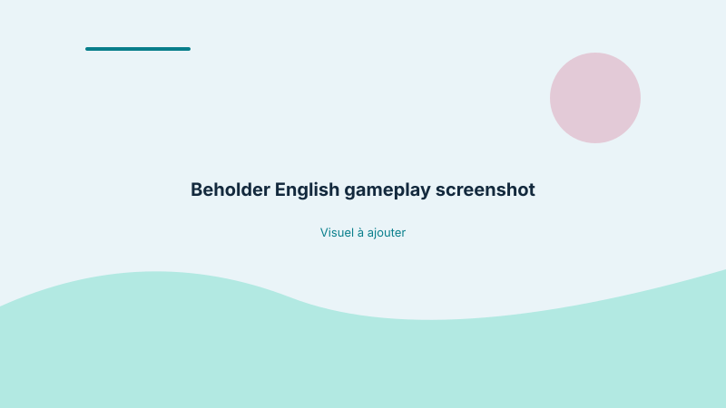
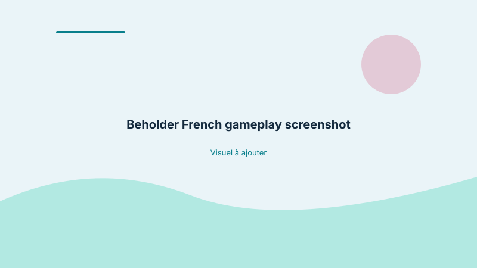

Video game localization · Alawar
Full-game localization from English into French, with in-context testing to review dialogue, interface text and player choices within the game.
Beholder is a narrative PC game in which dialogue, menus, system messages and player choices work together to shape how players understand the game world and the consequences of their decisions.
The assignment involved localizing the full game from English into French and reviewing the translated content in the game itself. This meant considering each piece of text in relation to its interface, surrounding dialogue and gameplay context—not only as an individual string.
The screenshots show examples from the English-language and French-language game environments. They provide a visual reference for the in-game context; they are not reconstructed mock-ups.

English-language screenshot

French-language screenshot
The work covered dialogue, menus, system messages and player choices. After translation and adaptation, I tested the content in the game environment to review how it appeared and functioned in context.
Translated and adapted narrative dialogue and player-facing text.
Reviewed menus and system messages within the interface.
Checked player choices in their surrounding gameplay context.
Identified contextual issues, text truncation and interface constraints that were not apparent from reviewing strings in isolation.
A string can read well on its own and still create a problem when it appears in the game. Contextual review helps reveal issues involving meaning, continuity, available space or the relationship between text and player action.
For a narrative game, these details contribute to a more coherent localized experience.
Let’s discuss your localization needs, content context and linguistic quality requirements.